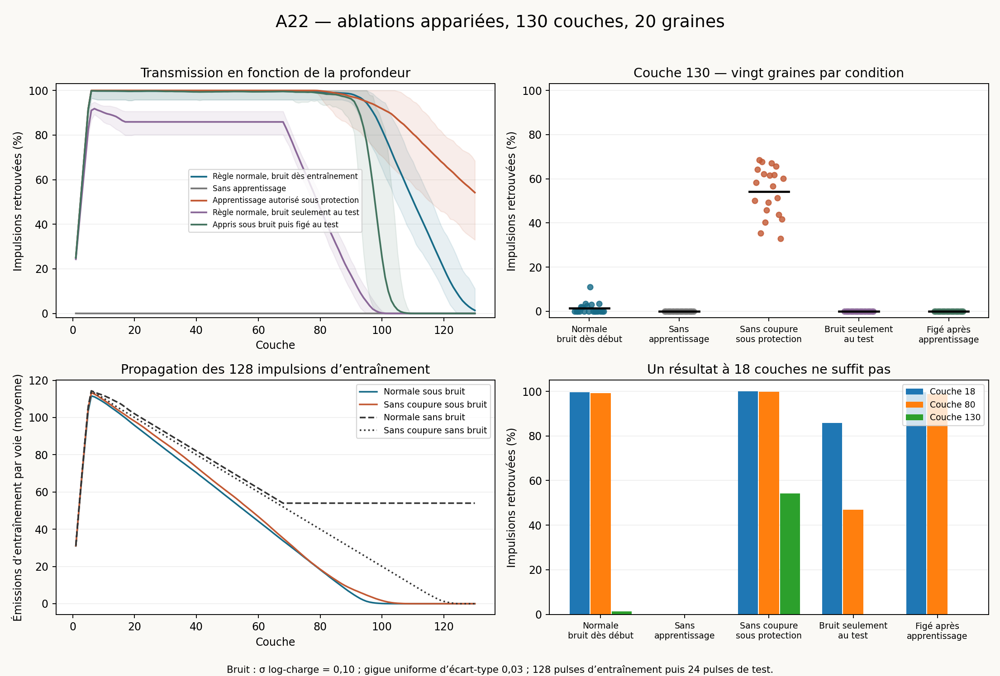

100 réalisations principales (cinq conditions × vingt graines), trois contrôles sans bruit, et un rejeu de contrôle avec le solveur antérieur. Simulateur ponctuel fourni, étendu ; aucun moteur certifié importé.
| Condition | Graines | Impulsions retrouvées à 130 | Graines avec une émission | Mot complet sur les 12 voies | Erreur relative RMS* |
|---|---|---|---|---|---|
| Règle normale, bruit dès entraînement | 20 | 1.37 % (min 0 ; max 11.1) | 7 / 20 | 0 / 20 | 2.47 % |
| Sans apprentissage | 20 | 0 % (min 0 ; max 0) | 0 / 20 | 0 / 20 | — % |
| Apprentissage autorisé sous protection | 20 | 54.2 % (min 33 ; max 68.4) | 20 / 20 | 0 / 20 | 1.95 % |
| Règle normale, bruit seulement au test | 20 | 0 % (min 0 ; max 0) | 0 / 20 | 0 / 20 | — % |
| Appris sous bruit puis figé au test | 20 | 0 % (min 0 ; max 0) | 0 / 20 | 0 / 20 | — % |
* L’erreur ne concerne que les paires d’étiquettes source consécutives retrouvées une fois. Elle ne compte pas les impulsions perdues. Un tiret signifie qu’aucune paire ne permet cette mesure.

Aux premières couches, toutes les voies ne sont pas encore accessibles depuis la source : la montée initiale des courbes reflète l’élargissement spatial du front.
L’affirmation forte n’est pas confirmée à ce niveau de bruit. La règle normale avec bruit dès l’entraînement retrouve seulement 1,37 % des impulsions à 130 couches, contre 54,20 % quand l’apprentissage reste actif sous protection. Cette dernière condition transmet davantage dans les vingt comparaisons appariées, mais ne conserve jamais le mot complet. On ne peut donc pas attribuer ici une robustesse profonde à la nécessité de la coupure pendant la protection.
L’apprentissage bruité fait légèrement mieux que l’apprentissage propre suivi de bruit au test (1,37 % contre 0 %), ce qui reste très loin d’une transmission robuste. La suppression complète de l’apprentissage empêche même l’amorçage dans le contrôle sans bruit.
Règle normale avec bruit dès entraînement : dans 20 réalisations sur 20, aucune impulsion d’entraînement n’atteint la couche 130. Il faut donc distinguer l’installation du régime et sa robustesse une fois appris. Un échec à cette profondeur avec seulement 128 pulses ne démontre pas que le même milieu déjà appris échouerait, ni qu’un entraînement plus long suffirait.
Apprentissage autorisé sous protection : dans 20 réalisations sur 20, aucune impulsion d’entraînement n’atteint la couche 130. Il faut donc distinguer l’installation du régime et sa robustesse une fois appris. Un échec à cette profondeur avec seulement 128 pulses ne démontre pas que le même milieu déjà appris échouerait, ni qu’un entraînement plus long suffirait.
| Contrôle sans bruit | Impulsions retrouvées à 130 | Émissions de test | Émissions d’entraînement à 130 | Voies avec mot complet |
|---|---|---|---|---|
| Normale | 100 % | 288 | 648 | 12 / 12 |
| Sans apprentissage | 0 % | 0 | 0 | 0 / 12 |
| Apprentissage sous protection | 92 % | 265 | 0 | 0 / 12 |
L’ablation complète de l’apprentissage part des gains nominaux (0,3 ; 1,2 ; 0,3) et b=0,08. La source n’alimente qu’une voie ; une cellule de la première couche ne reçoit donc qu’un port. Au gain central 1,2, la charge maximale sous le pulse canonique vaut environ 0,769 < 1 : le réseau sans apprentissage ne s’amorce pas dans le contrôle sans bruit. Son échec n’est donc pas à lui seul une preuve que la coupure pendant la protection explique la robustesse au bruit.
Anneau de douze voies, trois parents par cellule depuis la couche précédente, 130 couches. Toutes les cellules sont initialement fraîches : q=0,1 ; gains (0,3 ; 1,2 ; 0,3) ; b=0,08 ; auxiliaires READY à leur repos. Les 128 pulses d’entraînement arrivent aux dates 8k. Les 24 pulses de test démarrent à 4096 et leurs intervalles suivent le motif 20 × (1 ; 1,1 ; 1,05 ; 1,2 ; 1 ; 1,15). Tous les événements d’entraînement sont propagés ; les gains appris ne sont jamais substitués à une histoire.
Chaque pulse de chaque connexion est multiplié par exp(0,1 Z − 0,005), Z gaussien standard : moyenne unitaire et coefficient de variation 10,025 %. La principale et son auxiliaire reçoivent cette même impulsion modifiée ; le seuil auxiliaire est recalculé. La gigue est uniforme et centrée, d’écart-type 0,03 ; un délai nominal de 0,1 maintient tous les délais positifs. Les vingt graines sont 0 à 19.
Les perturbations sont appariées par graine, couche, cellule, port et étiquette source (avec occurrence en cas de duplication). Une impulsion manquante ne décale pas les tirages suivants. Les labels ambigus utilisent leur ordinal ; l’appariement n’est alors plus une comparaison de la même cohorte identifiable. Ce champ aléatoire diffère des tirages séquentiels de la campagne précédente, tout en gardant les mêmes lois marginales. Les groupes avec bruit dès l’entraînement et seulement au test partagent les mêmes tirages de test pour les pulses identifiables correspondants.
Les formes des pulses émis restent canoniques ; le bruit est porté par les connexions. Les équations entre les événements et les seuils restent ceux du kit, hormis les interventions déclarées. La réserve énergétique E n’est pas intégrée, comme dans le simulateur fourni ; cette campagne ne constitue pas une validation énergétique indépendante.
La fraction retrouvée utilise toujours le dénominateur 12 × 24 = 288 à la couche 130. Une étiquette doit apparaître une fois sur une voie pour être retrouvée ; les pertes ne redéfinissent pas les voies de référence. Un mot complet sur le réseau exige exactement les 24 labels une fois sur chacune des douze voies, sans émission supplémentaire. Les événements ambigus et doublons figurent dans summary.csv. Les intervalles sont comparés au mot source effectif, pas à une période moyenne.
La graine est l’unité statistique ; les voies et pulses d’un même réseau ne sont pas traités comme des répétitions indépendantes. Les bandes des courbes sont les extrêmes observés sur vingt graines. Les intervalles exacts ci-dessous sont binomiaux (Clopper–Pearson) ; les intervalles bootstrap appariés et les différences entre conditions sont dans summary.json. Un bootstrap dégénéré à zéro pour vingt extinctions n’établit pas une probabilité universelle nulle.
Règle normale, bruit dès entraînement : intervalle exact à 95 % pour la probabilité d’au moins une émission à 130 [15.4 %, 59.2 %] ; pour un mot complet sur les 12 voies [0 %, 16.8 %].
Sans apprentissage : intervalle exact à 95 % pour la probabilité d’au moins une émission à 130 [0 %, 16.8 %] ; pour un mot complet sur les 12 voies [0 %, 16.8 %].
Apprentissage autorisé sous protection : intervalle exact à 95 % pour la probabilité d’au moins une émission à 130 [83.2 %, 100 %] ; pour un mot complet sur les 12 voies [0 %, 16.8 %].
Règle normale, bruit seulement au test : intervalle exact à 95 % pour la probabilité d’au moins une émission à 130 [0 %, 16.8 %] ; pour un mot complet sur les 12 voies [0 %, 16.8 %].
Appris sous bruit puis figé au test : intervalle exact à 95 % pour la probabilité d’au moins une émission à 130 [0 %, 16.8 %] ; pour un mot complet sur les 12 voies [0 %, 16.8 %].
VALIDATION.json conserve la régression sur 21 302 événements historiques (aucun écart de nombre ; erreur maximale de date < 10⁻⁸), la comparaison locale avec le solveur précédent, et des tests analytiques des gardes : gain constant sous protection dans la règle normale, incrément complet de 0,6 sur le dépôt logarithmique sans cette garde, butée à 4, et gel effectif des gains et de b.
Le calcul ponctuel des racines utilise SciPy brentq, xtol=5×10⁻¹⁴, rtol=10⁻¹⁴. Les formules exponentielles sont identiques ; les sommes nulles sont évitées pour accélérer le calcul. kernel.diff décrit les changements par rapport au noyau ponctuel de la campagne précédente. Un rejeu complet à 130 couches de la graine 0 avec le solveur antérieur vérifie que la conclusion n’est pas créée par cette accélération ; son résultat de comparaison est dans REFERENCE_RECHECK.json.
| Condition | Graine | Fraction retrouvée à 130 | Émissions à 130 | Première couche sans émission de test | Première couche sans entraînement |
|---|---|---|---|---|---|
| all_none_0 | 0 | 0 % | 0 | 1 | 1 |
| all_none_1 | 1 | 0 % | 0 | 1 | 2 |
| all_none_10 | 10 | 0 % | 0 | 1 | 2 |
| all_none_11 | 11 | 0 % | 0 | 1 | 1 |
| all_none_12 | 12 | 0 % | 0 | 1 | 1 |
| all_none_13 | 13 | 0 % | 0 | 1 | 1 |
| all_none_14 | 14 | 0 % | 0 | 2 | 1 |
| all_none_15 | 15 | 0 % | 0 | 1 | 1 |
| all_none_16 | 16 | 0 % | 0 | 1 | 1 |
| all_none_17 | 17 | 0 % | 0 | 1 | 2 |
| all_none_18 | 18 | 0 % | 0 | 1 | 1 |
| all_none_19 | 19 | 0 % | 0 | 1 | 1 |
| all_none_2 | 2 | 0 % | 0 | 1 | 1 |
| all_none_3 | 3 | 0 % | 0 | 1 | 1 |
| all_none_4 | 4 | 0 % | 0 | 1 | 1 |
| all_none_5 | 5 | 0 % | 0 | 1 | 1 |
| all_none_6 | 6 | 0 % | 0 | 1 | 1 |
| all_none_7 | 7 | 0 % | 0 | 1 | 1 |
| all_none_8 | 8 | 0 % | 0 | 1 | 1 |
| all_none_9 | 9 | 0 % | 0 | 1 | 1 |
| all_normal_0 | 0 | 0 % | 0 | 125 | 94 |
| all_normal_1 | 1 | 0 % | 0 | 129 | 96 |
| all_normal_10 | 10 | 0 % | 0 | 130 | 99 |
| all_normal_11 | 11 | 0 % | 0 | 127 | 95 |
| all_normal_12 | 12 | 2.08 % | 6 | — | 101 |
| all_normal_13 | 13 | 1.74 % | 5 | — | 102 |
| all_normal_14 | 14 | 0 % | 0 | 129 | 97 |
| all_normal_15 | 15 | 3.47 % | 10 | — | 100 |
| all_normal_16 | 16 | 2.43 % | 7 | — | 97 |
| all_normal_17 | 17 | 0 % | 0 | 129 | 97 |
| all_normal_18 | 18 | 11.1 % | 32 | — | 105 |
| all_normal_19 | 19 | 3.12 % | 9 | — | 99 |
| all_normal_2 | 2 | 0 % | 0 | 128 | 97 |
| all_normal_3 | 3 | 0 % | 0 | 127 | 99 |
| all_normal_4 | 4 | 0 % | 0 | 130 | 101 |
| all_normal_5 | 5 | 0 % | 0 | 129 | 96 |
| all_normal_6 | 6 | 3.47 % | 10 | — | 101 |
| all_normal_7 | 7 | 0 % | 0 | 126 | 99 |
| all_normal_8 | 8 | 0 % | 0 | 126 | 91 |
| all_normal_9 | 9 | 0 % | 0 | 129 | 99 |
| all_ungated_0 | 0 | 50 % | 144 | — | 89 |
| all_ungated_1 | 1 | 58.3 % | 168 | — | 100 |
| all_ungated_10 | 10 | 64.2 % | 185 | — | 109 |
| all_ungated_11 | 11 | 68.4 % | 197 | — | 109 |
| all_ungated_12 | 12 | 35.4 % | 102 | — | 79 |
| all_ungated_13 | 13 | 67.7 % | 195 | — | 110 |
| all_ungated_14 | 14 | 62.2 % | 179 | — | 103 |
| all_ungated_15 | 15 | 40.3 % | 116 | — | 90 |
| all_ungated_16 | 16 | 45.8 % | 132 | — | 84 |
| all_ungated_17 | 17 | 49.3 % | 142 | — | 92 |
| all_ungated_18 | 18 | 61.5 % | 177 | — | 106 |
| all_ungated_19 | 19 | 67 % | 193 | — | 105 |
| all_ungated_2 | 2 | 56.6 % | 163 | — | 105 |
| all_ungated_3 | 3 | 61.8 % | 178 | — | 108 |
| all_ungated_4 | 4 | 65.6 % | 189 | — | 105 |
| all_ungated_5 | 5 | 51.4 % | 148 | — | 100 |
| all_ungated_6 | 6 | 43.8 % | 126 | — | 88 |
| all_ungated_7 | 7 | 33 % | 95 | — | 78 |
| all_ungated_8 | 8 | 41.7 % | 120 | — | 83 |
| all_ungated_9 | 9 | 60.1 % | 173 | — | 103 |
| frozen_learned_0 | 0 | 0 % | 0 | 102 | 94 |
| frozen_learned_1 | 1 | 0 % | 0 | 103 | 96 |
| frozen_learned_10 | 10 | 0 % | 0 | 106 | 99 |
| frozen_learned_11 | 11 | 0 % | 0 | 103 | 95 |
| frozen_learned_12 | 12 | 0 % | 0 | 106 | 101 |
| frozen_learned_13 | 13 | 0 % | 0 | 107 | 102 |
| frozen_learned_14 | 14 | 0 % | 0 | 102 | 97 |
| frozen_learned_15 | 15 | 0 % | 0 | 105 | 100 |
| frozen_learned_16 | 16 | 0 % | 0 | 102 | 97 |
| frozen_learned_17 | 17 | 0 % | 0 | 101 | 97 |
| frozen_learned_18 | 18 | 0 % | 0 | 110 | 105 |
| frozen_learned_19 | 19 | 0 % | 0 | 106 | 99 |
| frozen_learned_2 | 2 | 0 % | 0 | 101 | 97 |
| frozen_learned_3 | 3 | 0 % | 0 | 104 | 99 |
| frozen_learned_4 | 4 | 0 % | 0 | 106 | 101 |
| frozen_learned_5 | 5 | 0 % | 0 | 106 | 96 |
| frozen_learned_6 | 6 | 0 % | 0 | 105 | 101 |
| frozen_learned_7 | 7 | 0 % | 0 | 104 | 99 |
| frozen_learned_8 | 8 | 0 % | 0 | 99 | 91 |
| frozen_learned_9 | 9 | 0 % | 0 | 103 | 99 |
| probe_normal_0 | 0 | 0 % | 0 | 101 | — |
| probe_normal_1 | 1 | 0 % | 0 | 102 | — |
| probe_normal_10 | 10 | 0 % | 0 | 100 | — |
| probe_normal_11 | 11 | 0 % | 0 | 97 | — |
| probe_normal_12 | 12 | 0 % | 0 | 98 | — |
| probe_normal_13 | 13 | 0 % | 0 | 96 | — |
| probe_normal_14 | 14 | 0 % | 0 | 101 | — |
| probe_normal_15 | 15 | 0 % | 0 | 101 | — |
| probe_normal_16 | 16 | 0 % | 0 | 101 | — |
| probe_normal_17 | 17 | 0 % | 0 | 100 | — |
| probe_normal_18 | 18 | 0 % | 0 | 97 | — |
| probe_normal_19 | 19 | 0 % | 0 | 101 | — |
| probe_normal_2 | 2 | 0 % | 0 | 97 | — |
| probe_normal_3 | 3 | 0 % | 0 | 101 | — |
| probe_normal_4 | 4 | 0 % | 0 | 100 | — |
| probe_normal_5 | 5 | 0 % | 0 | 98 | — |
| probe_normal_6 | 6 | 0 % | 0 | 99 | — |
| probe_normal_7 | 7 | 0 % | 0 | 98 | — |
| probe_normal_8 | 8 | 0 % | 0 | 98 | — |
| probe_normal_9 | 9 | 0 % | 0 | 95 | — |
| quiet_none | 0 | 0 % | 0 | 1 | 1 |
| quiet_normal | 0 | 100 % | 288 | — | — |
| quiet_ungated | 0 | 92 % | 265 | — | 125 |
| recheck_reference_all_normal_0 | 0 | 0 % | 0 | 125 | 94 |
Python 3, NumPy, SciPy, Matplotlib. Depuis le dossier : python build_kernel.py, python validate.py, python run.py --workers 8, puis python report.py. Les résultats présents sont réutilisés ; déplacer output/ pour tout recalculer. La vérification de référence est disponible via python reference_recheck.py. Les sources de la campagne antérieure et le ZIP fourni sont conservés dans le dossier sources.
Statut : simulations ponctuelles exploratoires, sans certification, sans assertion générale de nécessité ou de suffisance de la règle locale.